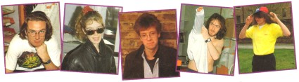

|
Winter is setting in again and, as usual, trains are being disabled by leaves, cars by massive traffic jams, bikes by slippery roads and feet by unfeasibly deep puddles. The SU Crew, despite being international megastars, are still all in a muddle as far as getting into work in these adverse weather conditions is concerned.

ALAN
Code Masters is technically only a two hour journey from SU Towers but when visiting them earlier on this month Al and Tina ended up travelling for seven hours thanks to several cancelled trains, signal failures and a mysterious missing train driver in Reading. However Al actually wishes that the streets were even wetter than they are now 'cos then he could surf to work every day!
YVETTE
Yvette hates travelling by London's infamous tube because every day, just as she's getting comfortable, some silly git in a smelly raincoat comes and sits down beside her. He invariably starts coughing up bucket loads of phlegm, sneezes like a hurricane and complains about his wet feet. Then, after a while, his raincoat starts to give off more steam than a sauna filled with seven hundred pairs of worn socks.
PHILIP
Meet Philip. Philip is brand new. God knows where we got him from but we did. Philip cycles to work every day. This keeps him very fit but unfortunately he doesn't get much sleep. You see our Philip lives in Glasgow and thus when he finishes work of an evening and sets off home, cycling at 200 mph, he just arrives in time to leave for work again the following morning. "It's a bit tricky when the roads are wet."
GARTH
Garth is very fortunate because he actually lives in SU Towers. This is the result of recent experiments with a nuclear powered razor, his ex-house's central heating system, several trained hairdressers in asbestos suits and a US Airforce defoliant chemical. The net result of all this is that Garth is now clean-shaven for the first time in his life, but homeless.
MONA NICHOLS
Steve is the sort of chap who never has problems getting into work. For a start, whenever he goes by train BR makes sure it runs properly in his honour. Secondly, his car is also configured as a miniature jump-jet, so traffic jams are never a problem. Thirdly, if he ever walks into work, puddles don't pose any threat - Steve can, after all, walk on water. OOhhh! Mr. Perfect.
| {kind=link}